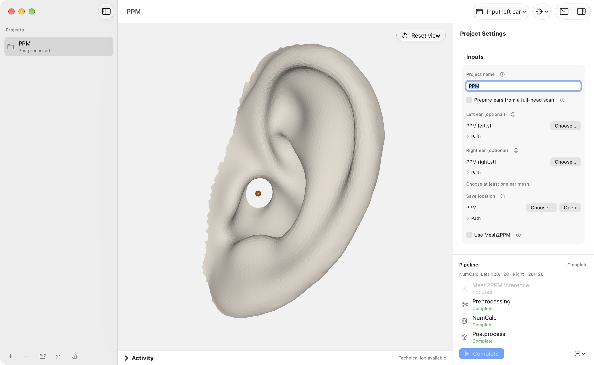

SOURCE GUIDE / Features may differ from the published installer. Check your release before following a workflow.
DESKTOP APP
Run your first project.
The macOS and Windows apps combine mesh viewing, project settings, pipeline controls, and results in one workspace. Bundled tools can run offline after installation.
1. Install the app
- macOS: Apple Silicon, macOS 13 or later. Open the DMG and move Pinna2HRTF to Applications. The currently published DMG is ad-hoc signed and not notarized.
- Windows: x64, Windows 10 version 2004 or later, or Windows 11. Windows ARM has not been tested. The installer is not digitally signed.
Each desktop package includes Python, the inference models, and simulation tools, so a separate Python, Blender, or uv installation is not needed for the app.
2. Create a project
- Create a project or import an existing project folder.
- Choose a project save location and add the left ear, right ear, or both. You can also enable full-head scan preparation; see the scan preparation guide.
- Use folders in the project sidebar to group work. Projects can be moved between folders and duplicated with their results. Removing a folder returns its projects to the main list. Removing a project from the sidebar leaves its project folder on disk.
Project files and app settings are separate. Project outputs are written to the chosen project location. App preferences, cached resources, and the project registry are stored separately by the operating system.
3. Check the inputs
Mesh2PPM inference is optional and off by default. When enabled, it predicts a refined ear surface from the input mesh. Preprocessing uses the original mesh unless Use predictions for preprocessing is enabled. You can inspect the mesh in the viewer before continuing.
Project settings include the evaluation grid, head and mesh parameters, frequency range, source setup, and optional scan-preparation controls. The run panel controls available stages and local NumCalc resource limits.
4. Prepare, solve, and export
- Scan Preparation is used only when the project is configured with a full-head scan.
- Mesh2PPM Inference is optional.
- Preprocessing creates the simulation project geometry and setup files.
- NumCalc computes the acoustic field; local runs can limit parallel instances, CPU load, and memory where supported.
- SOFA export and postprocessing write acoustic results for downstream use.
Use Preview to inspect available meshes and plots. The live log reports stage activity; the technical log contains lower-level details. When placing a left or right microphone, click the desired location in the viewer and confirm with Done. Drag to rotate the view; press Escape to cancel placement.
5. Keep and manage results
Generated inference, prepared-ear, simulation, and SOFA results are stored with the project. Reset Outputs removes generated files tracked as outputs while protecting configured inputs and saved manual ear edits. Check that important results are backed up before resetting.

Choose output processing
Resampling changes the HRIR sample rate. Spatial HRTF upsampling adds source directions by interpolating between the simulated directions; it does not change the sample rate or HRIR length. Upsampled files are saved separately in Upsampled/, and the original exports are kept.
Spatial upsampling has its own optional frontal level normalization. Check this separately from the normal postprocessing level offset when comparing output levels.
If a run does not finish
- Prepared ears look misplaced or incomplete
- Check scan orientation, selected sides, crop rotation, and crop placement. Review the ear meshes before continuing to preprocessing.
- The pipeline is waiting for an ear review
- If Require ear review before continuing is enabled, open each selected ear in the editor and use Save Reviewed Ear.
- A stage reports an error
- Read the technical log for the failing stage and check the configured input paths. Keep the log and configuration when reporting the problem.
- No SOFA results are available
- Confirm that NumCalc completed and that export and postprocessing ran. A prepared simulation project alone does not contain the final acoustic results.
Next
Continue with full-head scan preparation and ear editing, or use the Python CLI guide for scripted runs.